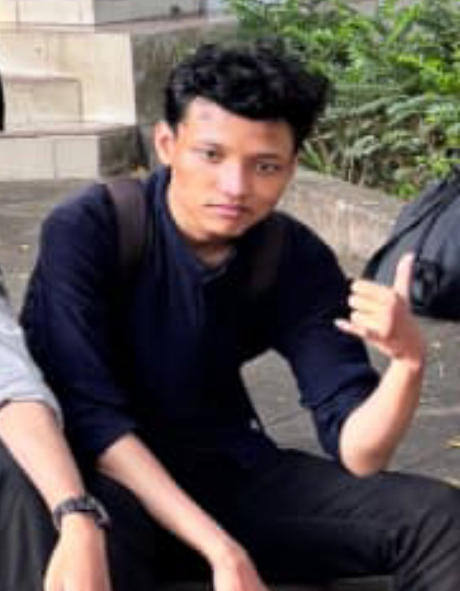

Mahasiswa Universitas Muhammadiyah Yogyakarta
Deskripsi :
Halo! Saya Dzakwan Putra Wicaksono, Umur 20 tahun dan Saya berasal dari Sumatra. Halaman ini dibuat sebagai bentuk latihan penerapan CSS baik secara inline, internal, maupun eksternal dan untuk tugas Praktikum Desain Pengembangan Web Pertemuan 3.